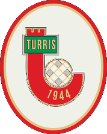

Il mio percorso inizia nel 2017, quando la passione per la cucina mi porta a raccontare e recensire attività della ristorazione sul mio profilo Instagram @iamluciodecurtis, iniziando a collaborare con diversi brand come food influencer.
Sports Photographer& Full Stack
Marketer


Chi sono
Ciao, mi chiamo
Ciao, mi chiamo
Lucio De Curtis.
Sports Photographer e Full Stack Marketer. Da 9 anni supporto aziende e professionisti nei processi digital e di comunicazione.
Il 7 giugno 2018 fondo OutKore, agenzia di Marketing e Comunicazione, con cui collaboro con aziende e attività in tutta Italia, maturando esperienza nella gestione di progetti, team e rapporti commerciali.
Nel 2020 scelgo di chiudere l’agenzia e proseguire come freelance e consulente marketing per aziende, startup e personal brand. Nel 2024 apro una nuova società, OutKore SRL.
Nel 2025, insieme a un gruppo di amici, nasce Napoli Padel Tour, organizzazione dedicata a tornei di padel ed eventi sportivi.
Da circa un anno sto concentrando sempre più il mio lavoro sul mondo dello sport, unendo fotografia sportiva, produzione di contenuti e le competenze digitali costruite in questi anni.
Brand con cui ho collaborato
Chi si è fidato
Chi si è fidato
del mio lavoro 17
Club, aziende e realtà con cui ho lavorato tra fotografia, comunicazione e marketing.

01Photography & VideomakingLightroomPremiere Pro CapCut
CapCut
CapCut02Social Media StrategyInstagramMetaTikTok
03Sviluppo Siti WebWebflowWixShopify
04E-mail Marketing & AutomationActiveCampaignZapier
05Project Management
06Video AI HiggsfieldClaudeChatGPT
HiggsfieldClaudeChatGPT
HiggsfieldClaudeChatGPT07Grafica SocialCanva
08Motion GraphicAfter Effects
Come lavoro
Non sono solo un
Non sono solo un
fotografo sportivo.
Porto nella fotografia quasi 10 anni di esperienza nella comunicazione.
Negli anni ho lavorato tra social media, marketing, comunicazione e produzione di contenuti, imparando a capire cosa serve davvero a un brand per raccontarsi e comunicare il proprio valore.
Oggi unisco questa esperienza alla fotografia sportiva, creando immagini pensate non solo per raccontare ciò che succede in campo, ma per diventare contenuti pronti all’utilizzo.
PrimaDuranteDopoil match
Penso a ciò che serve in ogni momento della partita:
- Contenuti live
- Matchday
- Grafiche social
- Storytelling
- Materiali per gli sponsor

2017

Food influencer@iamluciodecurtisRacconto e recensisco locali e ristoranti sul mio profilo Instagram. Arrivano le prime collaborazioni con i brand e capisco quanto conti saper raccontare bene un prodotto.
2018 — 2020

FounderOutKore Marketing & CommunicationIl 7 giugno 2018 nasce la mia prima agenzia di marketing e comunicazione. Lavoro con aziende e attività in tutta Italia e imparo sul campo a gestire progetti, team e rapporti commerciali.
2020 — 2024

FreelanceBrand, aziende e professionistiChiudo l’agenzia e continuo da freelance e consulente marketing per aziende, startup e personal brand: strategia, contenuti, siti web e produzione foto e video. Tra le realtà con cui ho collaborato: Napoli Running, Edenlandia Spa, Acquaflash Spa, Alpha Advisory Spa.
2024 — oggi

FounderOutKore Creative Collective SrlApro una nuova società insieme a un socio: un collettivo di freelance che affianca aziende e professionisti, con un modello pensato per usare al meglio il budget di ogni cliente.
2025 — oggi

Co-founderNapoli Padel TourCon un gruppo di amici fondiamo Napoli Padel Tour, un’organizzazione dedicata a tornei di padel ed eventi sportivi, dove sport, organizzazione e comunicazione si incontrano.
Oggi

Sports Photographer & Full Stack MarketerLucio De CurtisPorto sempre di più il mio lavoro nel mondo dello sport: fotografia sportiva per club, atleti e tornei, insieme alla produzione di contenuti e alle competenze digitali costruite in questi anni.